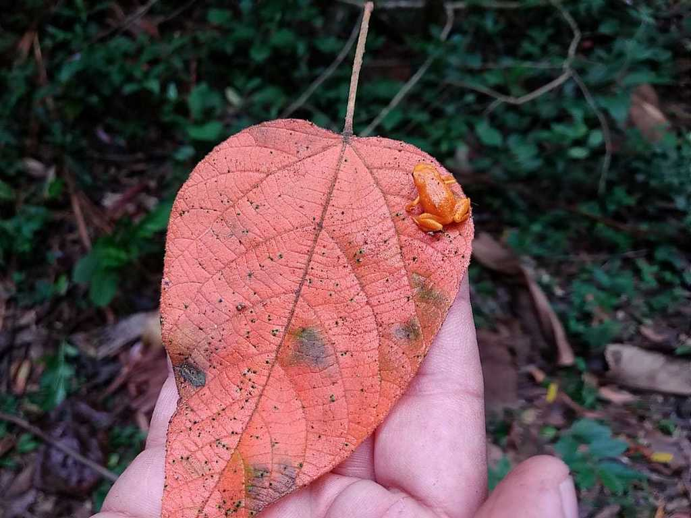

O Pumpkin toadlet, ou sapo abóbora, é uma espécie de sapo
pequena e colorida da família brachycephalidae,
este minúsculo sapinho pode
ser encontrado no sudeste do Brasil
onde é encontrado entre a serapilheira da mata atlantica, ele se encontra
no estado do Espirito Santo, Rio de Janeiro, sudeste de São Paulo e sudeste
de Minas Gerais.
|  | Com seu tamanho variando de 12.5 á 19.7 mm seu minúsculo corpinho apresentado uma cor alaranjada além de brilharem em uma cor azulada quando exportos a luz utravioleta, os cientistas descobriram isso quando expulseram eles de forma não intencional, o que fez as pernas, a cabeça e a coluna deles brilharem. os pesquisadores acreditam que essa sua característica os ajuda a se prodegerem de predadores. |
Pumpkin toadlet, o sapinho mais desajeitado
Pumpkin toadlet, como ocorre seu desenvolvimento